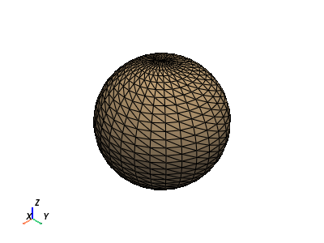

pyvista.MultiBlock#
- class MultiBlock(*args, **kwargs)[source]#
A composite class to hold many data sets which can be iterated over.
This wraps/extends the vtkMultiBlockDataSet class so that we can easily plot these data sets and use the composite in a Pythonic manner.
You can think of
MultiBlocklike a list as we can iterate over this data structure by index. It has some dictionary features as we can also access blocks by their string name.Changed in version 0.36.0:
MultiBlockadheres more closely to being list like, and inherits fromcollections.abc.MutableSequence. Multiple nonconforming behaviors were removed or modified.Examples
>>> import pyvista as pv
Create an empty composite dataset.
>>> blocks = pv.MultiBlock()
Add a dataset to the collection.
>>> sphere = pv.Sphere() >>> blocks.append(sphere)
Add a named block.
>>> blocks["cube"] = pv.Cube()
Instantiate from a list of objects.
>>> data = [pv.Sphere(center=(2, 0, 0)), pv.Cube(center=(0, 2, 0)), ... pv.Cone()] >>> blocks = pv.MultiBlock(data) >>> blocks.plot()
Instantiate from a dictionary.
>>> data = {"cube": pv.Cube(), "sphere": pv.Sphere(center=(2, 2, 0))} >>> blocks = pv.MultiBlock(data) >>> blocks.plot()
Iterate over the collection.
>>> for name in blocks.keys(): ... block = blocks[name]
>>> for block in blocks: ... surf = block.extract_surface() # Do something with each dataset
- append(dataset: Optional[Union[MultiBlock, DataSet]], name: Optional[str] = None)[source]#
Add a data set to the next block index.
- Parameters:
- dataset
pyvista.DataSetorpyvista.MultiBlock Dataset to append to this multi-block.
- name
str,optional Block name to give to dataset. A default name is given depending on the block index as ‘Block-{i:02}’.
- dataset
Examples
>>> import pyvista as pv >>> from pyvista import examples >>> data = {"cube": pv.Cube(), "sphere": pv.Sphere(center=(2, 2, 0))} >>> blocks = pv.MultiBlock(data) >>> blocks.append(pv.Cone()) >>> len(blocks) 3 >>> blocks.append(examples.load_uniform(), "uniform") >>> blocks.keys() ['cube', 'sphere', 'Block-02', 'uniform']
- as_polydata_blocks(copy=False)[source]#
Convert all the datasets within this MultiBlock to
pyvista.PolyData.- Parameters:
- copybool,
optional Option to create a shallow copy of any datasets that are already a
pyvista.PolyData. WhenFalse, any datasets that are already PolyData will not be copied.
- copybool,
- Returns:
pyvista.MultiBlockMultiBlock containing only
pyvista.PolyDatadatasets.
Notes
Null blocks are converted to empty
pyvista.PolyDataobjects. Downstream filters that operate on PolyData cannot accept MultiBlocks with null blocks.
- property bounds: List[float]#
Find min/max for bounds across blocks.
Examples
Return the bounds across blocks.
>>> import pyvista as pv >>> data = [pv.Sphere(center=(2, 0, 0)), pv.Cube(center=(0, 2, 0)), pv.Cone()] >>> blocks = pv.MultiBlock(data) >>> blocks.bounds [-0.5, 2.5, -0.5, 2.5, -0.5, 0.5]
- property center: Any#
Return the center of the bounding box.
Examples
>>> import pyvista as pv >>> data = [pv.Sphere(center=(2, 0, 0)), pv.Cube(center=(0, 2, 0)), pv.Cone()] >>> blocks = pv.MultiBlock(data) >>> blocks.center array([1., 1., 0.])
- clean(empty=True)[source]#
Remove any null blocks in place.
Examples
>>> import pyvista as pv >>> data = {"cube": pv.Cube(), "empty": pv.PolyData()} >>> blocks = pv.MultiBlock(data) >>> blocks.clean(empty=True) >>> blocks.keys() ['cube']
- copy(deep=True)[source]#
Return a copy of the multiblock.
- Parameters:
- deepbool,
optional When
True, make a full copy of the object.
- deepbool,
- Returns:
pyvista.MultiBlockDeep or shallow copy of the
MultiBlock.
Examples
>>> import pyvista as pv >>> data = [pv.Sphere(center=(2, 0, 0)), pv.Cube(center=(0, 2, 0)), pv.Cone()] >>> blocks = pv.MultiBlock(data) >>> new_blocks = blocks.copy() >>> len(new_blocks) 3
- extend(datasets: Iterable[Union[MultiBlock, DataSet]]) None[source]#
Extend MultiBlock with an Iterable.
If another MultiBlock object is supplied, the key names will be preserved.
- Parameters:
- datasets
Iterable[pyvista.DataSetorpyvista.MultiBlock] Datasets to extend.
- datasets
Examples
>>> import pyvista as pv >>> from pyvista import examples >>> data = {"cube": pv.Cube(), "sphere": pv.Sphere(center=(2, 2, 0))} >>> blocks = pv.MultiBlock(data) >>> blocks_uniform = pv.MultiBlock({"uniform": examples.load_uniform()}) >>> blocks.extend(blocks_uniform) >>> len(blocks) 3 >>> blocks.keys() ['cube', 'sphere', 'uniform']
- get(index: str, default: Optional[Union[MultiBlock, DataSet]] = None) Optional[Union[MultiBlock, DataSet]][source]#
Get a block by its name.
If the name is non-unique then returns the first occurrence. Returns
defaultif name isn’t in the dataset.- Parameters:
- index
str Index or name of the dataset within the multiblock.
- default
pyvista.DataSetorpyvista.MultiBlock,optional Default to return if index is not in the multiblock.
- index
- Returns:
pyvista.DataSetorpyvista.MultiBlockorNoneDataset from the given index if it exists.
Examples
>>> import pyvista as pv >>> from pyvista import examples >>> data = {"poly": pv.PolyData(), "uni": pv.UniformGrid()} >>> blocks = pv.MultiBlock(data) >>> blocks.get("poly") PolyData ... >>> blocks.get("cone")
- get_block_name(index: int) Optional[str][source]#
Return the string name of the block at the given index.
- Parameters:
- index
int Index of the block to get the name of.
- index
- Returns:
strName of the block at the given index.
Examples
>>> import pyvista as pv >>> data = {"cube": pv.Cube(), "sphere": pv.Sphere(center=(2, 2, 0))} >>> blocks = pv.MultiBlock(data) >>> blocks.get_block_name(0) 'cube'
- get_data_range(name: str, allow_missing: bool = False) Tuple[float, float][source]#
Get the min/max of an array given its name across all blocks.
- get_index_by_name(name: str) int[source]#
Find the index number by block name.
Examples
>>> import pyvista as pv >>> data = {"cube": pv.Cube(), "sphere": pv.Sphere(center=(2, 2, 0))} >>> blocks = pv.MultiBlock(data) >>> blocks.get_index_by_name('sphere') 1
- insert(index: int, dataset: Union[MultiBlock, DataSet], name: Optional[str] = None) None[source]#
Insert data before index.
- Parameters:
- index
int Index before which to insert data.
- dataset
pyvista.DataSetorpyvista.MultiBlock Data to insert.
- name
str,optional Name for key to give dataset. A default name is given depending on the block index as
'Block-{i:02}'.
- index
Examples
Insert a new
pyvista.PolyDataat the start of the multiblock.>>> import pyvista as pv >>> data = {"cube": pv.Cube(), "sphere": pv.Sphere(center=(2, 2, 0))} >>> blocks = pv.MultiBlock(data) >>> blocks.keys() ['cube', 'sphere'] >>> blocks.insert(0, pv.Plane(), "plane") >>> blocks.keys() ['plane', 'cube', 'sphere']
- property is_all_polydata: bool#
Return
Truewhen all the blocks arepyvista.PolyData.This method will recursively check if any internal blocks are also
pyvista.PolyData.- Returns:
- bool
Return
Truewhen all blocks arepyvista.PolyData.
- keys() List[Optional[str]][source]#
Get all the block names in the dataset.
- Returns:
listList of block names.
Examples
>>> import pyvista as pv >>> data = {"cube": pv.Cube(), "sphere": pv.Sphere(center=(2, 2, 0))} >>> blocks = pv.MultiBlock(data) >>> blocks.keys() ['cube', 'sphere']
- property length: float#
Return the length of the diagonal of the bounding box.
Examples
>>> import pyvista as pv >>> data = [pv.Sphere(center=(2, 0, 0)), pv.Cube(center=(0, 2, 0)), pv.Cone()] >>> blocks = pv.MultiBlock(data) >>> blocks.length 4.3584
- property n_blocks: int#
Return the total number of blocks set.
Examples
>>> import pyvista as pv >>> data = [pv.Sphere(center=(2, 0, 0)), pv.Cube(center=(0, 2, 0)), pv.Cone()] >>> blocks = pv.MultiBlock(data) >>> blocks.n_blocks 3
- plot(off_screen=None, full_screen=None, screenshot=None, interactive=True, cpos=None, window_size=None, show_bounds=False, show_axes=None, notebook=None, background=None, text='', return_img=False, eye_dome_lighting=False, volume=False, parallel_projection=False, use_ipyvtk=None, jupyter_backend=None, return_viewer=False, return_cpos=False, jupyter_kwargs=None, theme=None, hidden_line_removal=None, anti_aliasing=None, zoom=None, border=None, border_color='k', border_width=2.0, ssao=False, **kwargs)#
Plot a PyVista, numpy, or vtk object.
- Parameters:
- var_item
pyvista.DataSet,vtk,ornumpyobject PyVista, VTK, or
numpyobject to be plotted.- off_screenbool,
optional Plots off screen when
True. Helpful for saving screenshots without a window popping up. Defaults to the global settingpyvista.OFF_SCREEN.- full_screenbool,
optional Opens window in full screen. When enabled, ignores
window_size. Defaults to active theme setting inpyvista.global_theme.full_screen.- screenshot
stror bool,optional Saves screenshot to file when enabled. See:
Plotter.screenshot(). DefaultFalse.When
True, takes screenshot and returnsnumpyarray of image.- interactivebool,
optional Allows user to pan and move figure. Defaults to
pyvista.global_theme.interactive.- cpos
list,optional List of camera position, focal point, and view up.
- window_size
list,optional Window size in pixels. Defaults to global theme
pyvista.global_theme.window_size.- show_boundsbool,
optional Shows mesh bounds when
True. DefaultFalse.- show_axesbool,
optional Shows a vtk axes widget. If
None, enabled according topyvista.global_theme.axes.show.- notebookbool,
optional When
True, the resulting plot is placed inline a jupyter notebook. Assumes a jupyter console is active.- background
color_like,optional Color of the background.
- text
str,optional Adds text at the bottom of the plot.
- return_imgbool,
optional Returns numpy array of the last image rendered.
- eye_dome_lightingbool,
optional Enables eye dome lighting.
- volumebool,
optional Use the
Plotter.add_volume()method for volume rendering.- parallel_projectionbool,
optional Enable parallel projection.
- use_ipyvtkbool,
optional Deprecated. Instead, set the backend either globally with
pyvista.set_jupyter_backend('ipyvtklink')or withbackend='ipyvtklink'.- jupyter_backend
str,optional Jupyter notebook plotting backend to use. One of the following:
'none': Do not display in the notebook.'static': Display a static figure.'ipygany': Show aipyganywidget'panel': Show apanelwidget.
This can also be set globally with
pyvista.set_jupyter_backend().- return_viewerbool,
optional Return the jupyterlab viewer, scene, or display object when plotting with jupyter notebook.
- return_cposbool,
optional Return the last camera position from the render window when enabled. Defaults to value in theme settings.
- jupyter_kwargs
dict,optional Keyword arguments for the Jupyter notebook plotting backend.
- theme
pyvista.themes.DefaultTheme,optional Plot-specific theme.
- hidden_line_removalbool,
optional Wireframe geometry will be drawn using hidden line removal if the rendering engine supports it. See
Plotter.enable_hidden_line_removal. Defaults to the theme settingpyvista.global_theme.hidden_line_removal.- anti_aliasingbool,
optional Enable or disable anti-aliasing. Defaults to the theme setting
pyvista.global_theme.anti_aliasing.- zoom
float,str,optional Camera zoom. Either
'tight'or a float. A value greater than 1 is a zoom-in, a value less than 1 is a zoom-out. Must be greater than 0.- borderbool,
optional Draw a border around each render window. Default
False.- border_color
color_like,optional Either a string, rgb list, or hex color string. For example:
color='white'color='w'color=[1.0, 1.0, 1.0]color='#FFFFFF'
- border_width
float,optional Width of the border in pixels when enabled.
- ssaobool,
optional Enable surface space ambient occlusion (SSAO). See
Plotter.enable_ssao()for more details.- **kwargs
optionalkeywordarguments See
pyvista.Plotter.add_mesh()for additional options.
- var_item
- Returns:
- cpos
list List of camera position, focal point, and view up. Returned only when
return_cpos=Trueor set in the default global or plot theme. Not returned when in a jupyter notebook andreturn_viewer=True.- image
np.ndarray Numpy array of the last image when either
return_img=Trueorscreenshot=Trueis set. Not returned when in a jupyter notebook withreturn_viewer=True. Optionally contains alpha values. Sized:[Window height x Window width x 3] if the theme sets
transparent_background=False.[Window height x Window width x 4] if the theme sets
transparent_background=True.
widgetIPython widget when
return_viewer=True.
- cpos
Examples
Plot a simple sphere while showing its edges.
>>> import pyvista as pv >>> mesh = pv.Sphere() >>> mesh.plot(show_edges=True)
 Plot a volume mesh. Color by distance from the center of the UniformGrid. Note
volume=Trueis passed.>>> import numpy as np >>> grid = pv.UniformGrid(dimensions=(32, 32, 32), spacing=(0.5, 0.5, 0.5)) >>> grid['data'] = np.linalg.norm(grid.center - grid.points, axis=1) >>> grid['data'] = np.abs(grid['data'] - grid['data'].max())**3 >>> grid.plot(volume=True)

- pop(index: Union[int, str] = -1) Optional[Union[MultiBlock, DataSet]][source]#
Pop off a block at the specified index.
- Parameters:
- Returns:
pyvista.DataSetorpyvista.MultiBlockDataset from the given index that was removed.
Examples
Pop the
"cube"multiblock.>>> import pyvista as pv >>> data = {"cube": pv.Cube(), "sphere": pv.Sphere(center=(2, 2, 0))} >>> blocks = pv.MultiBlock(data) >>> blocks.keys() ['cube', 'sphere'] >>> cube = blocks.pop("cube") >>> blocks.keys() ['sphere']
- replace(index: int, dataset: Optional[Union[MultiBlock, DataSet]]) None[source]#
Replace dataset at index while preserving key name.
- Parameters:
- index
int Index of the block to replace.
- dataset
pyvista.DataSetorpyvista.MultiBlock Dataset for replacing the one at index.
- index
Examples
>>> import pyvista as pv >>> import numpy as np >>> data = {"cube": pv.Cube(), "sphere": pv.Sphere(center=(2, 2, 0))} >>> blocks = pv.MultiBlock(data) >>> blocks.replace(1, pv.Sphere(center=(10, 10, 10))) >>> blocks.keys() ['cube', 'sphere'] >>> np.allclose(blocks[1].center, [10., 10., 10.]) True
- reverse()[source]#
Reverse MultiBlock in-place.
Examples
Reverse a multiblock.
>>> import pyvista as pv >>> data = {"cube": pv.Cube(), "sphere": pv.Sphere(center=(2, 2, 0))} >>> blocks = pv.MultiBlock(data) >>> blocks.keys() ['cube', 'sphere'] >>> blocks.reverse() >>> blocks.keys() ['sphere', 'cube']
- set_active_scalars(name: Optional[str], preference: str = 'cell', allow_missing: bool = False) Tuple[FieldAssociation, ndarray][source]#
Find the scalars by name and appropriately set it as active.
To deactivate any active scalars, pass
Noneas thename.- Parameters:
- name
strorNone Name of the scalars array to assign as active. If
None, deactivates active scalars for both point and cell data.- preference
str,optional If there are two arrays of the same name associated with points or cells, it will prioritize an array matching this type. Can be either
'cell'or'point'.- allow_missingbool,
optional Allow missing scalars in part of the composite dataset. If all blocks are missing the array, it will raise a
KeyError.
- name
- Returns:
pyvista.FieldAssociationField association of the scalars activated.
numpy.ndarrayAn array from the dataset matching
name.
Notes
The number of components of the data must match.
- set_block_name(index: int, name: Optional[str])[source]#
Set a block’s string name at the specified index.
- Parameters:
Examples
>>> import pyvista as pv >>> data = {"cube": pv.Cube(), "sphere": pv.Sphere(center=(2, 2, 0))} >>> blocks = pv.MultiBlock(data) >>> blocks.append(pv.Cone()) >>> blocks.set_block_name(2, 'cone') >>> blocks.keys() ['cube', 'sphere', 'cone']